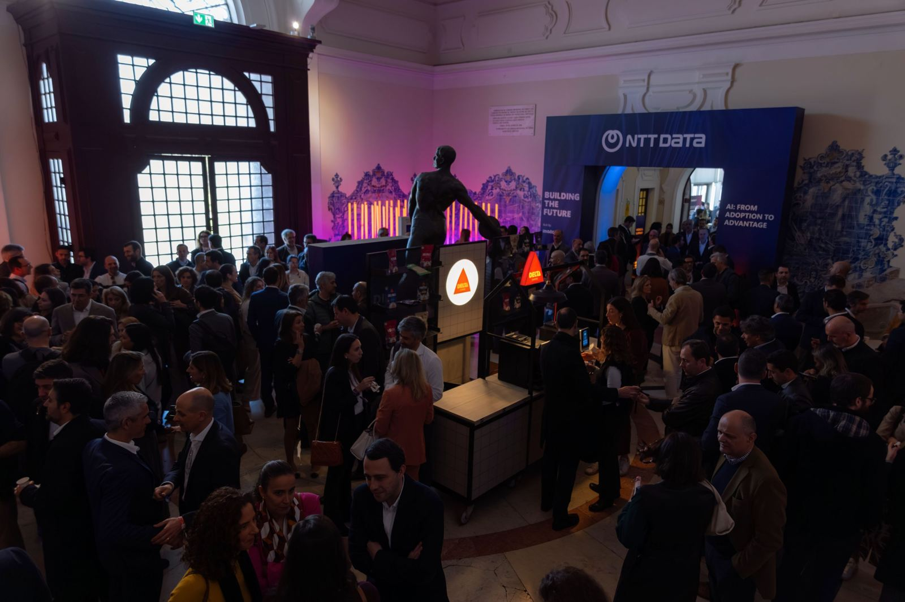

Conferences · AI
Building The Future 2027
- Dates
- Venue
- Pavilhão Carlos Lopes, Lisbon
- Location
- Lisbon, Portugal
- Format
- In-person
- Category
- AI
- Industry
- AI conference
- Organiser
- Building The Future
- Official website
- https://buildingthefuture.pt/
About
One-day in-person conference; the official site also offers an online platform. Category is AI (official theme “AI. Scale to Compete.”). Dates are local to the host city (Western European Time, UTC+0 / UTC+1 in summer).
Topics: artificial intelligence, organisations, technology.
Official homepage shows cumulative “impact of BTF editions” marketing figures (including “106K Participants”). That is not a clearly worded 2027 expected-attendance sentence, so it is not stored as organiser attendance. Ranked by our estimated size tier 'medium' (10,000–30,000 attendees/visits).
Sources
Hotels
- EPIC SANA Marquês — 5★ · Avenida Fontes Pereira de Melo, 8, 1069-310 Lisboa · 0.4 km from the venue · Price on request · Venue page
- Hotel Real Palácio — 5★ · Rua Tomás Ribeiro, N.º 115, 1050-228 Lisboa · 0.4 km from the venue · Price on request
- Iberostar Lisboa — 5★ · Rua Castilho, nº 64, 1250-071 Lisboa · 0.5 km from the venue · Price on request
- InterContinental Lisbon — 5★ · Rua Castilho, 149, 1099-034 Lisboa · 0.4 km from the venue · Price on request
- ME Lisbon — 5★ · Avenida António Augusto de Aguiar, n.º 2, 1050-016 LISBOA · 0.3 km from the venue · Price on request
- Ritz Four Seasons Hotel — 5★ · Rua Rodrigo da Fonseca, 88, 1099-039 Lisboa · 0.4 km from the venue · Price on request
- Eurostars Lisboa Parque Hotel — 4★ · Largo do Andaluz 13 b, 1050-121 Lisboa · 0.4 km from the venue · Price on request
- HF Fénix Lisboa — 4★ · Praça Marquês de Pombal, 8, 1269-133 Lisboa · 0.4 km from the venue · Price on request
- HF Fénix Urban — 4★ · Av. António Augusto de Aguiar, 14, 1050-016 Lisboa · 0.3 km from the venue · Price on request
- Vip Executive Picoas Hotel — 4★ · Rua Filipe Folque n.º 12 B, 1069-191 LISBOA · 0.4 km from the venue · Price on request
Venue
- Pavilhão Carlos Lopes — Venue · Lisbon, Portugal